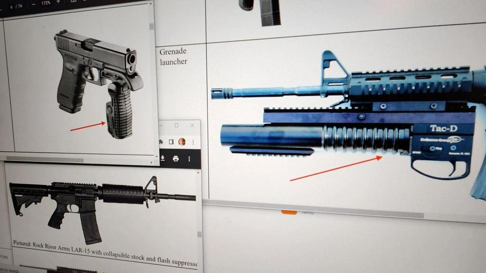

Breaking News
 July 10
July 10
by Olivia Bennett
A federal appeals court has upheld Illinois’ semiautomatic weapons ban, rejecting a Second Amendment challenge and keeping restrictions on AR-15-style rifles and high-capacity magazines in place.
A federal appeals court upheld Illinois' ban on semiautomatic weapons and high-capacity magazines, a major victory for state officials defending the law and a setback for gun rights groups that have challenged the restrictions. The U.S. Court of Appeals for the Seventh Circuit ruled that Illinois' firearm restrictions do not violate the Second Amendment, overturning a lower court ruling that questioned the law's constitutionality. The 2-1 decision keeps the state’s ban in effect while the broader legal battle over similar laws plays out. The ruling is another significant moment in the national discussion over whether states can limit access to AR-15-style rifles and other semi-automatic weapons, a question that may one day reach the U.S. Supreme Court.
Democratic Gov. JB Pritzker signed the Protect Illinois Communities Act in 2023 after a Fourth of July parade in Highland Park, Illinois, turned deadly in a 2022 mass shooting. The shooting killed seven and injured dozens more after a gunman used a legally purchased semiautomatic rifle. The tragedy prompted a renewed push by Illinois lawmakers to limit certain firearms and high-capacity magazines. The law bans the sale and possession of certain assault-style weapons, including AR-15-style rifles, certain semiautomatic firearms, large-capacity magazines and certain firearm attachments. Supporters of the law say the restrictions are necessary to mitigate potential damage caused by weapons often used in mass shootings.
The Seventh Circuit majority said Illinois’ law is consistent with the historical tradition of regulating weapons deemed especially dangerous. The court analyzed the issue within the framework laid out in recent Supreme Court Second Amendment rulings, which mandate that firearm restrictions align with the nation’s historical approach to gun regulation. The judges found that the state had a compelling interest in placing the banned firearms in a separate category from weapons traditionally used for individual self-defense. The ruling stressed that constitutional rights, including Second Amendment rights, have always been limited in some ways. Gun regulation, in the court’s view, is like other restrictions on constitutional rights when governments try to strike a balance between individual liberties and public safety.
Critics of the Illinois law condemned the ruling and said they will continue to fight the restrictions. Gun rights groups have argued that AR-15-style rifles are commonly owned by Americans for lawful purposes and therefore should be protected by the Second Amendment. They have claimed that states are unable to prevent a small minority of people from using guns to commit crimes. But the legal battle is far from over, especially since the Supreme Court is preparing to take on bigger issues around state bans on semiautomatic weapons.
The Illinois decision comes as the Supreme Court prepares to hear challenges to similar gun restrictions. The court has agreed to hear cases involving semiautomatic rifle bans in Illinois and Connecticut in one of the most important Second Amendment cases in years. The Supreme Court is set to hear a case that could decide whether certain semiautomatic rifles can be banned by states — and whether those weapons are protected by the Constitution. The outcome could have ramifications for gun laws around the country, especially in states that have enacted similar restrictions.
In welcoming the appeals court ruling, Gov. JB Pritzker said the law is a critical step forward for public safety. Supporters of the measure argue restricting access to specific guns and magazines could lessen the severity of mass shootings and help communities feel safer. Illinois Attorney General Kwame Raoul also challenged the law, saying the state has the right to regulate weapons that present significant public safety risks. The ruling lets Illinois officials continue to enforce the restrictions while broader constitutional questions remain unanswered.
Opponents of the ban say the law unfairly singles out guns owned by millions of Americans. NO: There is no reason semiautomatic rifles should be protected by the Constitution, any more than there is for self-defense and recreation. The judge dissenting in the Seventh Circuit case said the banned firearms are commonly owned and the state was going too far in its restrictions. Gun rights supporters say the Supreme Court's upcoming review is an opportunity to establish clearer national standards.
The court fight over Illinois’ ban on weapons is a sign of a deeper divide in the country over gun policy. Advocates of tougher restrictions say states need more robust tools to combat mass shootings and keep firearms away from especially dangerous individuals. Critics argue that government restrictions must respect constitutional protections, and that law-abiding gun owners should not be punished for criminal use. Illinois is one of a handful of states pushing the envelope on gun regulation after big shifts in U.S. Supreme Court rulings on the Second Amendment.
The Seventh Circuit’s ruling keeps Illinois’ semiautomatic weapons ban in place, but the fight is far from over. The future of assault weapons bans across the United States is uncertain as the Supreme Court prepares to hear similar challenges. The final ruling could change the way states regulate guns and the limits of Second Amendment protections for years to come. The ruling is a major legal victory for Illinois. For gun rights advocates, it’s another step in an ongoing constitutional battle that is likely to reach the nation’s highest court.

Olivia Bennett is a U.S. political correspondent reporting on federal policy, election developments, and national governance issues.